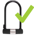
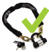
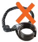

Ha sportolni szeretnél, akkor értelemszerűen a sportágnak megfelelő kerékpártípust vásárolsz magadnak. De mi a helyzet akkor, ha közlekedni szeretnél?
Hétköznapi közlekedésre és munkába járásra többféle kerékpártípus is alkalmas: citybike (városi bicikli), trekking, országúti vagy mountain bike — mindegyik más stílusú kerékpározást tesz lehetővé. Érdemes vásárlás előtt egy-egy ismerősöd kerékpárját kipróbálnod, hogy kiderítsd, milyen típus való neked, és később elégedett lehess választásoddal.
A mindennapi közlekedéshez nem kell drága bringa, sőt, minél egyszerűbb, annál jobb. Ahogy a mondás tartja: „Olcsó bringa, drága lakat, sokáig a tiéd marad.” Azonban fontos, hogy ne a minőségen spórolj, hanem azon, hogy csak annyi „funkciót” vegyél, amennyire szükséged van: például városi közlekedéshez nem kell drága teleszkóp. A sárhányó és láncvédő viszont fontos lehet, hogy mindig tisztán és frissen érkezz meg a munkába.
Kerékpárt leginkább szakboltban érdemes vásárolni, ahol megbízható minőséget kapsz. Ezen kívül segítenek neked megtalálni a számodra méretben és típusban legmegfelelőbb darabot, ráadásul ki is próbálhatod a bringát vásárlás előtt.
Amennyiben interneten veszel magadnak bringát, vagy használtat szeretnél venni, mindenképp kérd ki egy hozzáértő ismerősöd véleményét! Ügyelj a megfelelő méret kiválasztására! A megfelelő méret a testmagasságoddal függ össze, az interneten számos ilyen táblázatot találhatsz. A különböző kerékpártípusokhoz különböző mérettáblák tartoznak.
Ha belépsz a Kerékpárosklubba, akkor a kerékpározás ügyének támogatása mellett 5-50%‑os kedvezményhez juthatsz szerződéses partnereinknél (kerékpárboltok, vendéglátó és szálláshelyek stb.)
A legfrissebb listát megtalálod honlapunkon.
Ha már rendelkezel saját kerékpárral, néhány alapvető javítást te is el tudsz végezni, de ajánlott szakszervizhez fordulni használattól függően átlagosan félévente, hosszabb kihagyás után pedig mindenképp. Szintén célszerű tisztán tartani a kerékpárt. Indulás előtt ellenőrizzük a kerekek nyomását, a fékek és a lámpák működését.
Ha otthon egyáltalán nem rendelkezünk szerszámmal, érdemes egy kifejezetten kerékpárosoknak készült multifunkcionális szerszámot beszerezni. Ez olyan, mint egy kis svájci bicska sok-sok funkcióval, amellyel szinte az összes alapvető munkálat elvégezhető.
Amiket magad is egyszerűen elvégezhetsz:
fék: Érdemes néha ellenőrizned, hogy mennyire koptak el a fékpofák, és újra beállítani a fékeket. Ha teljesen elkoptak, pár perc alatt le tudod ezeket cserélni.
lánc: A láncot érdemes rendszeresen olajozni. Ne várd meg, míg berozsdásodik, vagy nyikorogni kezd, mert az a láncon kívül a lánckerekeknek sem jó.
kerék: A kerekeket mindig az ajánlott keménységűre pumpáld fel - általában az abroncsok oldalán feltüntetnek a gyártók egy ideális nyomásértéket. Télen lehetnek valamivel laposabbak az abroncsok, hogy minél nagyobb felületen tudjanak tapadni az úttesten, nagyobb eséllyel birkózva meg a csúszásveszéllyel.
télen: különösen fontos a kerékpár gondozása, erre vonatkozó tippeket a kerekparosklub.hu/telikarbantartas oldalon találhatsz.
A Cyclonomia egy kollektív közösségi műhely, ahol a tagok egymást segítve javíthatják a biciklijüket.
Fő céljuk a városi kerékpározás, az önálló szerszámhasználat támogatása és elterjesztése. „Csináld magad” filozófia alapján működnek.
Sötétben a világítás nélküli biciklis láthatatlan.
Legyél látható: legyen a bicikliden macskaszem (elöl fehér, hátul piros) , a kerekeiden küllőprizma és/vagy az abroncson reflexcsík, elöl és hátul pedig már szürkülettől használj villogót vagy lámpát! A villogókból olyan típusokat szerezz be, amelyek könnyen le- és felrakhatóak a kerékpárra, hogy azokat mindig magadnál tudd tartani. Ajánljuk mindezt azért, hogy megspórold azt a bosszúságot és kiadást, amit az első pár ellopott lámpa okoz. Minden útra vidd magaddal lámpáidat, mert ha sokáig kell maradnod, előfordulhat, hogy közben besötétedik. Mivel a lámpák többsége elemmel működik, tarts magadnál egy pár tartalék elemet is.
A biciklis lámpák többsége nem arra készült, hogy azzal több méterre előre láss, és hogy koromsötétben is észrevegyed velük az úthibákat, akadályokat. Erre vannak speciális kialakítású – többnyire költséges berendezések. Amennyiben éjszakai túrához ilyenre lenne szükséged, érdeklődj szakboltokban!
A fényvisszaverő mellény vagy ruházat használata lakott területen kívül sötétedés után vagy rossz látási viszonyok közt kötelező. Ez lehet a jól ismert mellény, vagy egyéb megfelelő nagyságú fényvisszaverő felülettel ellátott ruházat. Lakott területen belül használata nem kötelező, de ajánlott.
A led-es villogók akár több hónapot is kibírnak elemcsere nélkül. Érdemes azonban újratölthető elemeket venni, így egyszeri beruházással évekig nem kell erre költened.
A lámpákat mindig szedd le, ha magára hagyod kerékpárod, nehogy ellopják!
Az elemes lámpákon kívül használhatsz dinamós, agydinamós, indukciós és napelemes lámpákat is, melyekhez még elem sem kell.
A bukósisak használata csak egyetlen esetben kötelező, ha lakott területen kívül 40 km/h feletti sebességgel haladunk (lásd 32. oldal utolsó pontja). Ezt leszámítva mindenkinek a saját döntése a sisakviselés, de mi szívből ajánljuk sportoláshoz és 14 év alatti gyerekeknek !
A fejvédők közötti különbségek leginkább a komfortérzetben vannak. Az olcsóbb is ugyanúgy megvédi a fejet, de kényelem szempontjából nem mindegy, hogy milyen nehéz a fejvédő és hány szellőzőnyílással rendelkezik. Vásárláskor mindenképpen próbáld fel őket — még akkor is, ha állítható a belső átmérője — hogy tényleg passzol-e és oldalirányban sem mozog a fejeden. Bizonyosodj meg arról is, hogy a rögzítőpántok segítségével kényelmesen a fejedre tudod-e rögzíteni a sisakot, illetve azok biztosan tartják-e helyzetüket. Ha nem vagy biztos a dolgodban, kérd ki az eladó segítségét!
Ugyanakkor hangsúlyozzuk, hogy a veszélyek ellen az igazi védelem a kerékpáros tudása és figyelme. A sisak a komolyabb balesetek ellen nem véd, így sisak használata esetén is legyünk mindig körültekintőek!
Dánia városaiban, ahol arányaiban az egyik legmagasabb a kerékpározók száma a világon, a napi közlekedéshez szinte alig hordanak sisakot az emberek - ugyanakkor itt történik arányaiban a legkevesebb kerékpáros baleset és haláleset. Minél magasabb a kerékpárral közlekedők száma egy városban, annál biztonságosabbá válik a kerékpáros közlekedés - ez egy brit tanulmány konklúziója, amiről további részleteket találhatsz honlapunkon.
Az alábbi tanácsok talán maguktól értetődőnek tűnnek, mégis figyelmet érdemelnek, mert betartásukkal a kerékpárlopások nagy része elkerülhető.
Kizárólag jó minőségű, erős zárat használj!
Általános szabály: lakatra a kerékpár értékének kb. 10%-át költsd, olcsóbb bicikli esetén akár többet! Ahogy a mondás tartja: „Olcsó bringa, drága lakat - sokáig a tiéd marad!” Merev anyagú, edzett acélból készült lakatokat érdemes vásárolni – U-lakatot vagy acélszemes láncot. A hajlékony acélsodronyokat és gerinclakatokat könnyen lecsípik, vastagságuktól függetlenül.
U-lakat
Ez az egyik legpraktikusabb kerékpárlakat. Hátránya, hogy vastagabb tárgyakhoz nem lehet hozzákötni.
Acéllánc
Szintén megfelelő védelmet biztosít. Hátránya, hogy nagyobb és nehezebb, mint az U-lakat, viszont vastagabb tárgyakhoz is hozzáköthetjük.
Sodronyok, gerinclakatok
Ilyeneket semmiképp se vegyünk! Némelyik ugyan vastagnak és biztonságosnak látszik, valójában azonban másodpercek alatt lecsíphetők!
A Magyar Kerékpárosklub a budapesti Critical Mass sikerei nyomán éledt újjá 2005-ben. Bár a fix időpontban rendezett nagy budapesti felvonulások a végükhöz érkeztek, több vidéki városban továbbra is eszközei az érdekérvényesítésnek. A budapesti Critical Mass mozgalom tervei sem megszűnésről, hanem konkrét ügyekért, gyorsan megszervezett demonstrációkról, illetve a közösség által önszerveződő projektekről szólnak. Ha értesülni akarsz ezekről, iratkozz fel a www.criticalmass.hu oldal fejlécében található riadóhiradóra!
Egy pillanatra se hagyd magára lezáratlanul a bringádat!
A legtöbb lopás az ilyen „beugrom a boltba, tényleg csak egy percre” esetekben következik be.
Jól látható, forgalmas helyen lakatolj!
Például, ahol a gyalogos forgalomnak legalább minimális visszatartó ereje van a tolvajokkal szemben.
Győződj meg arról, hogy amihez lakatolsz, az biztosan le van rögzítve!
Ne kösd a kerékpárt olyan fához, amit ki lehet vágni vagy oszlophoz, amit ki lehet húzni a földből.
Ne hagyj a bringán mozdítható értéket!
Vidd magaddal a kilométerórát, lámpát, kulacsot, pumpát vagy egyéb mozdítható tartozékot, mert az is érték.
Ne tárold a bringádat hosszútávon lépcsőházak folyosóján, kapualjakban, még jobb zárral sem!
A lezárt folyosó sem jelent különösebb akadályt a tolvajnak, sőt, itt rejtve dolgozhat, nagyobb szerszámokat is igénybe vehet. Ráadásul gyakran kifigyelik, hogy melyik lépcsőházból mit lehet vinni. Zárható kerékpártárolóban, pincén belül is lakatold le a bringádat!
A zárat mindig vidd magaddal!
Sose hagyd a tárolón, hogy másnap ne kelljen cipelni! Otthagyott zárat könnyen “előkészíthetnek” anélkül, hogy észrevennéd.
A lakattal a kerékpár vázát is rögzítsd, ne csak a kereket!
A hazai településeken egyre több megfelelő kerépártámasz létesül, ahova biztonságosan lakatolhatsz. Ezek egy részét nem a helyi önkormányzatok telepítették, hanem cégek, üzletek, iskolák. Ha Te is szeretnél kerékpárparkolót kialakítani üzleted, iskolád, stb. elé, akkor vedd fel velünk a kapcsolatot és segítünk! parkolas@kerekparosklub.hu
Ha kerékpárral indulsz el, nyugodtan felülhetsz ugyanabban a ruhában, amiben egyébként is mennél!
Figyeljünk a lobogó vagy elálló ruharészekre, nehogy a kerék vagy lánc bekapja őket. Hagyományos és kiváló módszer a nadrág szárának lefogására a ruhacsipesz, kalapgumi, tépőzár, de olcsón lehet kapni bokára pattintható fényvisszaverős szalagot is. A szoknyavédő pedig megakadályozza, hogy a szoknya becsípődjön a küllők közé.
Hidegebb időben öltözködj rétegesen, hogy ha meleged lenne útközben, le tudj venni néhány ruhadarabot. Télen sem lehetetlen a tekerés, ekkor azonban fokozottan ügyelj az izüleleteidre! Mindenképp húzz kesztyűt, a térded és a derekad pedig lehetőleg még egy réteggel védd - lehet kapni kifejezetten kerékpáros térd- és derékmelegítőket, amikben kényelmesen lehet tekerni.
Ha esik, a megfelelő sárvédő és az esőkabát kombinációja csodákra képes!
A bizonyíték arra, hogy kerékpáron közlekedve sem vagyunk kénytelenek túlzó kompromisszumok meghozatalára az öltözködésben a cyclechic.hu oldal, ahol a szerkesztők teljesen hétköznapi emberek példáján keresztül mutatják be, hogy miként lehetünk általános utcai öltözetben kétkeréken is stílusosak.
Gyermekünket vihetjük magunkkal előre vagy a csomagtartóra szerelhető gyermekülésben. Így a biciklizéssel jó példát mutatunk a gyermekeinknek is, szokják a forgalmat, egyensúlyérzéküket edzi. A bukósisak használata a gyerekeknek sem kötelező, de javasoljuk, főleg kisgyerekeknek. Lapozz vissza a sisakról szóló fejezethez, ha többet szeretnél erről a témáról tudni.
A KRESZ szerint kerékpáron csak 10 évnél nem idősebb gyermeket szállíthatunk, és kizárólag csak az erre a célra kialakított pótülésen. Ha több ilyen kialakított pótülés van, akkor akár több gyereket is vihetünk magunkkal. Az ilyen speciális családi biciklik nyugaton nem számítanak kuriózumnak, Dániában például sokan családi autó helyett használják ezeket, és már hazánkban is kaphatóak.
Fontos: Egyre jobban terjednek Magyarországon is a gyermekszállításra kialakított kerékpár-utánfutók. Ezek nyugaton nagyon népszerűek, azonban hazánkban a jelenleg hatályos KRESZ szerint sajnos nem szabad ilyenekben gyereket szállítani! Remélhetőleg ez a közlejövőben változni fog. A személyszállításra vonatkozó pontos szabályokkal a 32. oldal utolsó előtti pontja foglalkozik.
Amint gyerekeink megtanulnak kétkerekű kerékpárjaikon tekerni, érdemes az önálló közlekedésre is tanítani őket.
A „Bringázz a suliba!” kampányunk keretében általános iskolás gyerekek reggelente iskolába menet „bringavonatokhoz” csatlakozva vidám menetben tekernek az iskoláig, szülői felügyelettel. Ha szeretnéd, hogy a ti iskolátokban is induljon hasonló program, vedd fel velünk a kapcsolatot!
Vásárolni bringával is lehet – hiszen a csomagok szállítására rengeteg lehetőség van. Használhatunk hátizsákot vagy ún. futártáskát, de kerülhet előre kosár, illetve hátulra csomagtartó, amin vagy gumipókkal vagy oldaltáskával akár 10–20 kilogrammot is tudunk szállítani. Elindulás előtt győződjünk meg arról, hogy a teher megfelelően rögzített-e.
Bringával Boltba kampányunkat azért indítottuk, hogy felhívjuk az üzletek, boltok figyelmét a kerékpáros vásárlók növekvő számára. Arra buzdítjuk őket, fogadják örömmel a kerékpárral érkezőket, építsenek számukra jól használható bicikliparkolókat. kerekparosklub.hu/bringavalboltba.
Eleged van a vacak küllőgyilkos bringaparkolókból? Hogy jobb megoldás híján a korláthoz kell lakatolnod? Hogy a biztonsági őr rádszól, ha nem jó helyen hagyod a biciklid - miközben nem lehet a kijelölt helyen normálisan lezárni azt? Most te is tehetsz a tarthatatlan állapotok ellen! Vegyél részt Bringával Boltba kampányunkban!
A Bringázz a Munkába (BAM!) kampányt a Magyar Kerékpárosklub szervezi. A kampány célja, hogy minél több embert ébresszünk rá arra, hogy kerékpárral közlekedni jó, valamint a kerékpár működőképes alternatívát jelent a munkába járásnál.